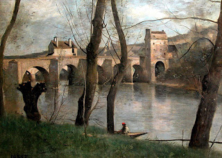

Avodah Zarah 19 - Learning Torah From Many Teachers
The first psalm says, " But his desire is in the Torah of God... " to teach us that one should study that area of the Torah which his heart currently desires. Two students of Rabbi Yehudah the Prince wanted to study different subjects, Levi - Proverbs, and Rabbi Shimon - Psalms. They prevailed over Levi to study Psalms, but once they learned "...but his desire is in the Torah of God..." - Levi said, "You taught me the permission to go back to Proverbs."
"... and he shall be like a tree rooted by a stream of waters ..." teaches that one should not learn from a single teacher, but uproot himself and go to another. Rav Chisda taught this to his students, and they all left him and went to Rabbah. Rabbah told them, "This dictum only applies to learning logic, but the body of knowledge is better acquired from one teacher, in one style" - and they all came back to Rav Chisda.
Rabbi Alexandri would call out, "Who wants life?" People gathered, and he quoted, " Guard your tongue from evil ..." . Now a man may think, "I will be silent and go to sleep." To discourage such thinking, it continues "... and do good " - study the Torah.
Art: Jean-Baptiste-Camille Corot - Le pont de Mantes